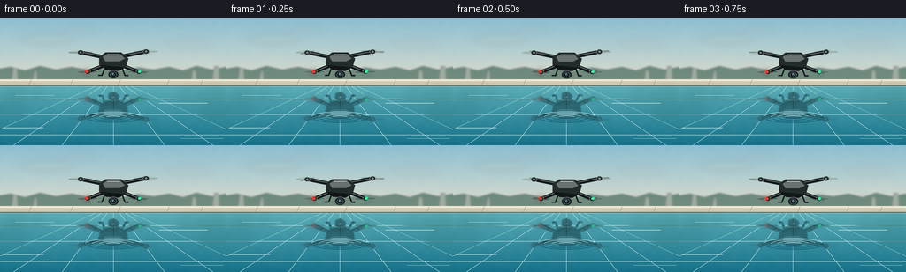
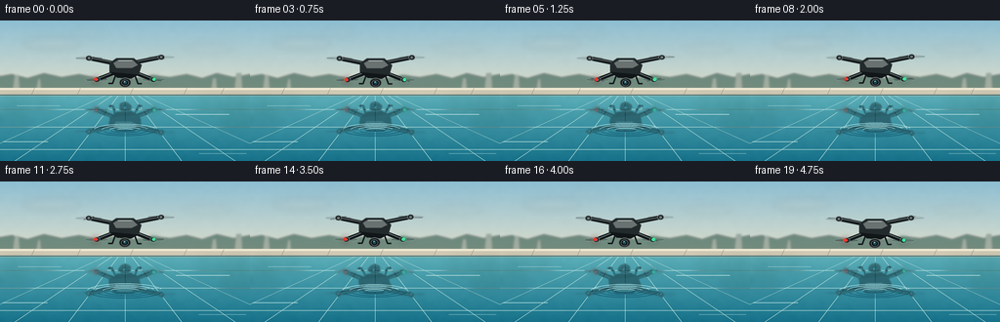

CODING AGENTS AS PIXEL WORLD MODELS
traex/GPT-5.6-Sol · phygen_059
点击播放 · 原生 RGB 像素
逐轮保存的候选
回放视频、检查图与代码变化。
每份候选均可单独播放。实际图片检查记录在下方工具轨迹中。
候选 01播放与检查图
点击播放 · 原生 RGB 像素


展开代码变化
--- 上一保存版本
+++ 本次保存版本
@@ -0,0 +1,213 @@
+from pathlib import Path
+import math
+import numpy as np
+from PIL import Image, ImageDraw, ImageFilter
+import artifact_io
+
+# Procedural, locked-off cinematic shot. Render large and downsample for clean edges.
+W, H, N = 256, 144, 20
+S = 4
+WW, HH = W*S, H*S
+WATERLINE = 76.0
+rng = np.random.default_rng(5901)
+
+
+def sc(v): return int(round(v*S))
+def pts(seq): return [(sc(x), sc(y)) for x,y in seq]
+
+def ellipse(d, box, fill, outline=None, width=1):
+ d.ellipse(tuple(sc(v) for v in box), fill=fill, outline=outline, width=max(1,sc(width)))
+
+def line(d, xy, fill, width=1, joint='curve'):
+ d.line(pts(xy), fill=fill, width=max(1,sc(width)), joint=joint)
+
+def polygon(d, xy, fill): d.polygon(pts(xy), fill=fill)
+
+# Fixed subtle photographic texture, identical between frames (no video shimmer).
+noise_small = rng.normal(0, 1, (36,64)).astype(np.float32)
+noise_im = Image.fromarray(np.uint8(np.clip(noise_small*28+128,0,255))).resize((WW,HH), Image.Resampling.BICUBIC).filter(ImageFilter.GaussianBlur(sc(1.2)))
+noise_field = (np.asarray(noise_im).astype(np.float32)-128.0)/28.0
+
+
+def make_background(frame):
+ arr = np.zeros((HH,WW,3), dtype=np.float32)
+ yy = np.arange(HH)[:,None] / S
+ # Clear pale morning sky.
+ sky_t = np.clip(yy/76.0,0,1)
+ top = np.array([141,190,210.],np.float32)
+ horizon = np.array([225,224,204.],np.float32)
+ arr[:] = top[None,None,:]*(1-sky_t[:,:,None]) + horizon[None,None,:]*sky_t[:,:,None]
+ # Pool: reflected sky at the far edge, deepening to clean aquamarine foreground.
+ mask = yy[:,0] >= WATERLINE
+ wt = np.clip((yy-WATERLINE)/(H-WATERLINE),0,1)
+ shallow = np.array([91,174,184.],np.float32)
+ deep = np.array([22,113,137.],np.float32)
+ water = shallow[None,None,:]*(1-wt[:,:,None]) + deep[None,None,:]*wt[:,:,None]
+ arr[mask,:,:] = water[mask,:,:]
+ # restrained texture, strongest in water, to avoid synthetic flat fills
+ amp = np.where(yy < WATERLINE, 0.75, 1.15)
+ arr += noise_field[:,:,None] * amp[:,:,None]
+ arr = np.uint8(np.clip(arr,0,255))
+ im = Image.fromarray(arr, 'RGB').convert('RGBA')
+ d = ImageDraw.Draw(im, 'RGBA')
+
+ # Very soft clouds and far landscaping establish an outdoor pool.
+ clouds = Image.new('RGBA',(WW,HH),(0,0,0,0)); cd=ImageDraw.Draw(clouds,'RGBA')
+ for bx,by,bw,bh,a in [(24,18,58,10,28),(188,25,49,8,21),(72,8,36,7,16)]:
+ ellipse(cd,(bx,by,bx+bw,by+bh),(255,251,237,a))
+ clouds=clouds.filter(ImageFilter.GaussianBlur(sc(4.0)))
+ im=Image.alpha_composite(im,clouds); d=ImageDraw.Draw(im,'RGBA')
+
+ # Distant hedge: deliberately soft and low contrast, framing the hovering craft.
+ hedge=Image.new('RGBA',(WW,HH),(0,0,0,0)); hd=ImageDraw.Draw(hedge,'RGBA')
+ polygon(hd,[(0,57),(0,72),(256,72),(256,55),(239,58),(222,54),(207,59),(191,55),(174,58),(156,56),(138,59),(119,56),(101,59),(81,55),(63,58),(45,54),(28,59),(12,55)],(42,82,70,150))
+ # hints of trunks / garden architecture
+ for x,w,h in [(13,7,16),(37,5,12),(216,6,13),(240,8,18)]:
+ polygon(hd,[(x,72),(x+w,72),(x+w-1,72-h),(x+2,72-h)],(39,62,54,76))
+ hedge=hedge.filter(ImageFilter.GaussianBlur(sc(1.0)))
+ im=Image.alpha_composite(im,hedge); d=ImageDraw.Draw(im,'RGBA')
+
+ # Pale limestone coping and its narrow dark water-side seam.
+ polygon(d,[(0,69),(256,69),(256,77),(0,77)],(208,201,180,255))
+ polygon(d,[(0,69),(256,69),(256,71),(0,71)],(239,232,210,255))
+ line(d,[(0,76.2),(256,76.2)],(22,82,91,135),0.8)
+ for x in [35,82,136,191,229]:
+ line(d,[(x,69.4),(x-3,76)],(151,148,136,85),0.45)
+
+ # Quiet pool detail: submerged tile joints, barely visible through glassy water.
+ # Lines converge toward a vanishing point so the plane reads as horizontal.
+ for xb in [-40,15,70,128,186,241,296]:
+ line(d,[(128+(xb-128)*0.12,77),(xb,144)],(184,225,220,19),0.55)
+ for y in [91,109,132]:
+ alpha = 14 if y<115 else 19
+ line(d,[(0,y),(256,y)],(196,231,224,alpha),0.5)
+
+ # Soft vertical garden reflections close to far side.
+ refl=Image.new('RGBA',(WW,HH),(0,0,0,0)); rd=ImageDraw.Draw(refl,'RGBA')
+ for x,w,h,a in [(4,20,29,25),(30,18,17,18),(206,20,21,18),(231,24,31,28)]:
+ polygon(rd,[(x,77),(x+w,77),(x+w+5,77+h),(x-5,77+h)],(22,76,68,a))
+ refl=refl.filter(ImageFilter.GaussianBlur(sc(5)))
+ im=Image.alpha_composite(im,refl)
+ return im
+
+
+def draw_drone(cx, cy, frame):
+ """Detailed consumer quadcopter on transparent layer; rotors animate, body hovers."""
+ lay=Image.new('RGBA',(WW,HH),(0,0,0,0)); d=ImageDraw.Draw(lay,'RGBA')
+ # hubs in an oblique X layout. Rear rotors slightly smaller/fainter.
+ hubs=[(-37,-10),(37,-11),(-29,12),(29,12)]
+ # rotor downwash blur/disks, then fast blade streaks with frame-varying phase
+ for i,(dx,dy) in enumerate(hubs):
+ x,y=cx+dx,cy+dy
+ rw = 29 if i<2 else 25
+ rh = 5.0 if i<2 else 4.5
+ ellipse(d,(x-rw/2,y-rh/2,x+rw/2,y+rh/2),(26,34,37,18))
+ ellipse(d,(x-rw/2,y-rh/2,x+rw/2,y+rh/2),None,(185,205,207,58),0.5)
+ # two semi-transparent blades, changing apparent angle independently
+ ang = frame*2.18 + i*1.31
+ for off in (0,math.pi):
+ a=ang+off
+ ex=x+math.cos(a)*rw*0.45; ey=y+math.sin(a)*rh*0.38
+ line(d,[(x,y),(ex,ey)],(38,45,47,125),1.15)
+ # horizontal shutter streak visually communicates high RPM
+ line(d,[(x-rw*.43,y),(x+rw*.43,y)],(38,45,47,72),0.65)
+ # Arms: dark under-edge + lit upper spine, rear first.
+ for dx,dy in hubs[:2]:
+ line(d,[(cx-3,cy-3),(cx+dx,cy+dy)],(21,27,29,255),4.2)
+ line(d,[(cx-3,cy-4),(cx+dx,cy+dy-0.4)],(100,109,108,220),1.0)
+ for dx,dy in hubs[2:]:
+ line(d,[(cx+(-3 if dx<0 else 3),cy+2),(cx+dx,cy+dy)],(16,22,24,255),4.5)
+ line(d,[(cx+(-3 if dx<0 else 3),cy+1),(cx+dx,cy+dy-0.4)],(91,102,103,220),1.0)
+ # motor drums
+ for i,(dx,dy) in enumerate(hubs):
+ x,y=cx+dx,cy+dy
+ ellipse(d,(x-3.4,y-2.7,x+3.4,y+2.7),(31,38,40,255),(131,143,142,220),0.55)
+ ellipse(d,(x-1.3,y-1.1,x+1.3,y+1.1),(119,128,126,255))
+ # central faceted fuselage with top highlight and front nose
+ polygon(d,[(cx-16,cy-5),(cx-9,cy-10),(cx+9,cy-10),(cx+17,cy-3),(cx+14,cy+7),(cx+6,cy+11),(cx-8,cy+10),(cx-16,cy+4)],(35,42,44,255))
+ polygon(d,[(cx-12,cy-5),(cx-7,cy-8),(cx+8,cy-8),(cx+13,cy-3),(cx+7,cy),(cx-9,cy)],(105,114,113,255))
+ polygon(d,[(cx-16,cy+4),(cx+14,cy+7),(cx+6,cy+11),(cx-8,cy+10)],(17,23,25,255))
+ line(d,[(cx-7,cy-7.5),(cx+7,cy-7.5)],(181,189,183,120),0.65)
+ # underslung gimbal and camera lens
+ line(d,[(cx,cy+8),(cx,cy+13)],(18,21,22,255),2.2)
+ ellipse(d,(cx-6.2,cy+10,cx+6.2,cy+20),(25,30,31,255),(112,119,117,255),0.75)
+ ellipse(d,(cx-3.7,cy+12,cx+3.7,cy+18.4),(5,10,12,255),(87,102,105,255),0.7)
+ ellipse(d,(cx-1.9,cy+13.2,cx+1.9,cy+16.9),(27,67,78,255))
+ ellipse(d,(cx-1.2,cy+13.5,cx+0.2,cy+14.8),(169,218,222,175))
+ # landing feet, plus red/green navigation LEDs
+ line(d,[(cx-10,cy+8),(cx-13,cy+16),(cx-17,cy+16)],(19,25,27,255),1.5)
+ line(d,[(cx+10,cy+8),(cx+13,cy+16),(cx+17,cy+16)],(19,25,27,255),1.5)
+ ellipse(d,(cx-31.7,cy+10,cx-28.3,cy+13.4),(241,54,39,255))
+ ellipse(d,(cx+27.9,cy+10,cx+31.5,cy+13.4),(62,229,154,255))
+ # tiny LED glow
+ glow=Image.new('RGBA',(WW,HH),(0,0,0,0)); gd=ImageDraw.Draw(glow,'RGBA')
+ ellipse(gd,(cx-34,cy+7.5,cx-26,cy+16),(255,52,37,70))
+ ellipse(gd,(cx+25,cy+7.5,cx+34,cy+16),(53,240,164,65))
+ glow=glow.filter(ImageFilter.GaussianBlur(sc(2.2)))
+ lay=Image.alpha_composite(glow,lay)
+ return lay
+
+
+def make_reflection(drone, frame):
+ """Exact planar vertical mirror, tinted, gently blurred and microscopically rippled."""
+ src=np.asarray(drone).copy()
+ out=np.zeros_like(src)
+ wy=sc(WATERLINE)
+ for yo in range(wy,HH):
+ ys=2*wy-yo
+ if 0 <= ys < HH:
+ # Glassy water: only a sub-pixel/one-pixel lateral waviness.
+ shift=int(round(S*(0.42*math.sin((yo/S)*0.58+frame*.19)+0.20*math.sin((yo/S)*1.31))))
+ row=np.roll(src[ys],shift,axis=0)
+ if shift>0: row[:shift]=0
+ elif shift<0: row[shift:]=0
+ depth=(yo-wy)/(HH-wy)
+ row=row.copy()
+ # reflection takes on cyan pool color, remains strongly legible
+ rgb=row[:,:3].astype(np.float32)
+ rgb=rgb*np.array([0.52,0.70,0.73])[None,:] + np.array([7,26,31])[None,:]
+ row[:,:3]=np.uint8(np.clip(rgb,0,255))
+ row[:,3]=np.uint8(row[:,3].astype(np.float32)*(0.58-0.18*depth))
+ out[yo]=row
+ ri=Image.fromarray(out,'RGBA').filter(ImageFilter.GaussianBlur(sc(0.48)))
+ return ri
+
+
+def add_water_surface(im, frame, cx):
+ d=ImageDraw.Draw(im,'RGBA')
+ # Small, calm concentric downwash ripples beneath the craftânot enough to destroy reflection.
+ pulse=(frame*0.62)%7.0
+ for k in range(4):
+ r=8.0+k*8.0+pulse
+ alpha=max(0,int(30-k*5-pulse*1.4))
+ # flattened ellipses in perspective; draw selected arcs instead of complete graphic rings
+ box=tuple(sc(v) for v in (cx-r,112-r*.19,cx+r,112+r*.19))
+ d.arc(box, 188, 344, fill=(196,238,237,alpha), width=max(1,sc(.45)))
+ d.arc(box, 8, 156, fill=(8,77,100,max(0,alpha-9)), width=max(1,sc(.4)))
+ # long sparse mirrorlike glints
+ glints=[(18,87,62,87.2,17),(180,96,235,96.1,13),(3,124,49,124.1,12),(204,136,252,136.2,12)]
+ for x1,y1,x2,y2,a in glints:
+ drift=.5*math.sin(frame*.18+x1)
+ line(d,[(x1+drift,y1),(x2+drift,y2)],(221,249,243,a),0.45)
+ return im
+
+
+def generate():
+ frames=[]
+ for f in range(N):
+ # restrained hovering motion (not traveling): smooth closed-cycle bob and micro sway
+ cx=128.0 + 0.65*math.sin(2*math.pi*f/N)
+ cy=48.0 + 0.75*math.sin(2*math.pi*f/N + 0.65)
+ scene=make_background(f)
+ drone=draw_drone(cx,cy,f)
+ scene=Image.alpha_composite(scene,make_reflection(drone,f))
+ scene=add_water_surface(scene,f,cx)
+ scene=Image.alpha_composite(scene,drone)
+ # final gentle optical softness/AA from 4x working canvas
+ final=scene.convert('RGB').resize((W,H),Image.Resampling.LANCZOS)
+ frames.append(np.asarray(final,dtype=np.uint8))
+ frames=np.stack(frames,axis=0)
+ artifact_io.save(frames,Path(__file__).resolve().parent)
+
+if __name__=='__main__':
+ generate()
可观测工具轨迹
实际执行的命令与返回图片。
命令 1exit 0
/bin/bash -lc "cat prompt.txt && printf '\\n---RULES---\\n' && cat GENERATION_RULES.md && printf '\\n---SPEC---\\n' && cat task_spec.json"
命令 2exit 0
/bin/bash -lc "find . -maxdepth 2 -type f -printf '%p %s bytes\\n' | sort"
命令 3exit 0
/bin/bash -lc "sed -n '1,240p' artifact_io.py"
命令 4exit 0
/bin/bash -lc "cat > generate.py <<'PY'
from pathlib import Path
import math
import numpy as np
from PIL import Image, ImageDraw, ImageFilter
import artifact_io
# Procedural, locked-off cinematic shot. Render large and downsample for clean edges.
W, H, N = 256, 144, 20
S = 4
WW, HH = W*S, H*S
WATERLINE = 76.0
rng = np.random.default_rng(5901)
def sc(v): return int(round(v*S))
def pts(seq): return [(sc(x), sc(y)) for x,y in seq]
def ellipse(d, box, fill, outline=None, width=1):
d.ellipse(tuple(sc(v) for v in box), fill=fill, outline=outline, width=max(1,sc(width)))
def line(d, xy, fill, width=1, joint='curve'):
d.line(pts(xy), fill=fill, width=max(1,sc(width)), joint=joint)
def polygon(d, xy, fill): d.polygon(pts(xy), fill=fill)
# Fixed subtle photographic texture, identical between frames (no video shimmer).
noise_small = rng.normal(0, 1, (36,64)).astype(np.float32)
noise_im = Image.fromarray(np.uint8(np.clip(noise_small*28+128,0,255))).resize((WW,HH), Image.Resampling.BICUBIC).filter(ImageFilter.GaussianBlur(sc(1.2)))
noise_field = (np.asarray(noise_im).astype(np.float32)-128.0)/28.0
def make_background(frame):
arr = np.zeros((HH,WW,3), dtype=np.float32)
yy = np.arange(HH)[:,None] / S
# Clear pale morning sky.
sky_t = np.clip(yy/76.0,0,1)
top = np.array([141,190,210.],np.float32)
horizon = np.array([225,224,204.],np.float32)
arr[:] = top[None,None,:]*(1-sky_t[:,:,None]) + horizon[None,None,:]*sky_t[:,:,None]
# Pool: reflected sky at the far edge, deepening to clean aquamarine foreground.
mask = yy[:,0] >= WATERLINE
wt = np.clip((yy-WATERLINE)/(H-WATERLINE),0,1)
shallow = np.array([91,174,184.],np.float32)
deep = np.array([22,113,137.],np.float32)
water = shallow[None,None,:]*(1-wt[:,:,None]) + deep[None,None,:]*wt[:,:,None]
arr[mask,:,:] = water[mask,:,:]
# restrained texture, strongest in water, to avoid synthetic flat fills
amp = np.where(yy < WATERLINE, 0.75, 1.15)
arr += noise_field[:,:,None] * amp[:,:,None]
arr = np.uint8(np.clip(arr,0,255))
im = Image.fromarray(arr, 'RGB').convert('RGBA')
d = ImageDraw.Draw(im, 'RGBA')
# Very soft clouds and far landscaping establish an outdoor pool.
clouds = Image.new('RGBA',(WW,HH),(0,0,0,0)); cd=ImageDraw.Draw(clouds,'RGBA')
for bx,by,bw,bh,a in [(24,18,58,10,28),(188,25,49,8,21),(72,8,36,7,16)]:
ellipse(cd,(bx,by,bx+bw,by+bh),(255,251,237,a))
clouds=clouds.filter(ImageFilter.GaussianBlur(sc(4.0)))
im=Image.alpha_composite(im,clouds); d=ImageDraw.Draw(im,'RGBA')
# Distant hedge: deliberately soft and low contrast, framing the hovering craft.
hedge=Image.new('RGBA',(WW,HH),(0,0,0,0)); hd=ImageDraw.Draw(hedge,'RGBA')
polygon(hd,[(0,57),(0,72),(256,72),(256,55),(239,58),(222,54),(207,59),(191,55),(174,58),(156,56),(138,59),(119,56),(101,59),(81,55),(63,58),(45,54),(28,59),(12,55)],(42,82,70,150))
# hints of trunks / garden architecture
for x,w,h in [(13,7,16),(37,5,12),(216,6,13),(240,8,18)]:
polygon(hd,[(x,72),(x+w,72),(x+w-1,72-h),(x+2,72-h)],(39,62,54,76))
hedge=hedge.filter(ImageFilter.GaussianBlur(sc(1.0)))
im=Image.alpha_composite(im,hedge); d=ImageDraw.Draw(im,'RGBA')
# Pale limestone coping and its narrow dark water-side seam.
polygon(d,[(0,69),(256,69),(256,77),(0,77)],(208,201,180,255))
polygon(d,[(0,69),(256,69),(256,71),(0,71)],(239,232,210,255))
line(d,[(0,76.2),(256,76.2)],(22,82,91,135),0.8)
for x in [35,82,136,191,229]:
line(d,[(x,69.4),(x-3,76)],(151,148,136,85),0.45)
# Quiet pool detail: submerged tile joints, barely visible through glassy water.
# Lines converge toward a vanishing point so the plane reads as horizontal.
for xb in [-40,15,70,128,186,241,296]:
line(d,[(128+(xb-128)*0.12,77),(xb,144)],(184,225,220,19),0.55)
for y in [91,109,132]:
alpha = 14 if y<115 else 19
line(d,[(0,y),(256,y)],(196,231,224,alpha),0.5)
# Soft vertical garden reflections close to far side.
refl=Image.new('RGBA',(WW,HH),(0,0,0,0)); rd=ImageDraw.Draw(refl,'RGBA')
for x,w,h,a in [(4,20,29,25),(30,18,17,18),(206,20,21,18),(231,24,31,28)]:
polygon(rd,[(x,77),(x+w,77),(x+w+5,77+h),(x-5,77+h)],(22,76,68,a))
refl=refl.filter(ImageFilter.GaussianBlur(sc(5)))
im=Image.alpha_composite(im,refl)
return im
def draw_drone(cx, cy, frame):
\"\"\"Detailed consumer quadcopter on transparent layer; rotors animate, body hovers.\"\"\"
lay=Image.new('RGBA',(WW,HH),(0,0,0,0)); d=ImageDraw.Draw(lay,'RGBA')
# hubs in an oblique X layout. Rear rotors slightly smaller/fainter.
hubs=[(-37,-10),(37,-11),(-29,12),(29,12)]
# rotor downwash blur/disks, then fast blade streaks with frame-varying phase
for i,(dx,dy) in enumerate(hubs):
x,y=cx+dx,cy+dy
rw = 29 if i<2 else 25
rh = 5.0 if i<2 else 4.5
ellipse(d,(x-rw/2,y-rh/2,x+rw/2,y+rh/2),(26,34,37,18))
ellipse(d,(x-rw/2,y-rh/2,x+rw/2,y+rh/2),None,(185,205,207,58),0.5)
# two semi-transparent blades, changing apparent angle independently
ang = frame*2.18 + i*1.31
for off in (0,math.pi):
a=ang+off
ex=x+math.cos(a)*rw*0.45; ey=y+math.sin(a)*rh*0.38
line(d,[(x,y),(ex,ey)],(38,45,47,125),1.15)
# horizontal shutter streak visually communicates high RPM
line(d,[(x-rw*.43,y),(x+rw*.43,y)],(38,45,47,72),0.65)
# Arms: dark under-edge + lit upper spine, rear first.
for dx,dy in hubs[:2]:
line(d,[(cx-3,cy-3),(cx+dx,cy+dy)],(21,27,29,255),4.2)
line(d,[(cx-3,cy-4),(cx+dx,cy+dy-0.4)],(100,109,108,220),1.0)
for dx,dy in hubs[2:]:
line(d,[(cx+(-3 if dx<0 else 3),cy+2),(cx+dx,cy+dy)],(16,22,24,255),4.5)
line(d,[(cx+(-3 if dx<0 else 3),cy+1),(cx+dx,cy+dy-0.4)],(91,102,103,220),1.0)
# motor drums
for i,(dx,dy) in enumerate(hubs):
x,y=cx+dx,cy+dy
ellipse(d,(x-3.4,y-2.7,x+3.4,y+2.7),(31,38,40,255),(131,143,142,220),0.55)
ellipse(d,(x-1.3,y-1.1,x+1.3,y+1.1),(119,128,126,255))
# central faceted fuselage with top highlight and front nose
polygon(d,[(cx-16,cy-5),(cx-9,cy-10),(cx+9,cy-10),(cx+17,cy-3),(cx+14,cy+7),(cx+6,cy+11),(cx-8,cy+10),(cx-16,cy+4)],(35,42,44,255))
polygon(d,[(cx-12,cy-5),(cx-7,cy-8),(cx+8,cy-8),(cx+13,cy-3),(cx+7,cy),(cx-9,cy)],(105,114,113,255))
polygon(d,[(cx-16,cy+4),(cx+14,cy+7),(cx+6,cy+11),(cx-8,cy+10)],(17,23,25,255))
line(d,[(cx-7,cy-7.5),(cx+7,cy-7.5)],(181,189,183,120),0.65)
# underslung gimbal and camera lens
line(d,[(cx,cy+8),(cx,cy+13)],(18,21,22,255),2.2)
ellipse(d,(cx-6.2,cy+10,cx+6.2,cy+20),(25,30,31,255),(112,119,117,255),0.75)
ellipse(d,(cx-3.7,cy+12,cx+3.7,cy+18.4),(5,10,12,255),(87,102,105,255),0.7)
ellipse(d,(cx-1.9,cy+13.2,cx+1.9,cy+16.9),(27,67,78,255))
ellipse(d,(cx-1.2,cy+13.5,cx+0.2,cy+14.8),(169,218,222,175))
# landing feet, plus red/green navigation LEDs
line(d,[(cx-10,cy+8),(cx-13,cy+16),(cx-17,cy+16)],(19,25,27,255),1.5)
line(d,[(cx+10,cy+8),(cx+13,cy+16),(cx+17,cy+16)],(19,25,27,255),1.5)
ellipse(d,(cx-31.7,cy+10,cx-28.3,cy+13.4),(241,54,39,255))
ellipse(d,(cx+27.9,cy+10,cx+31.5,cy+13.4),(62,229,154,255))
# tiny LED glow
glow=Image.new('RGBA',(WW,HH),(0,0,0,0)); gd=ImageDraw.Draw(glow,'RGBA')
ellipse(gd,(cx-34,cy+7.5,cx-26,cy+16),(255,52,37,70))
ellipse(gd,(cx+25,cy+7.5,cx+34,cy+16),(53,240,164,65))
glow=glow.filter(ImageFilter.GaussianBlur(sc(2.2)))
lay=Image.alpha_composite(glow,lay)
return lay
def make_reflection(drone, frame):
\"\"\"Exact planar vertical mirror, tinted, gently blurred and microscopically rippled.\"\"\"
src=np.asarray(drone).copy()
out=np.zeros_like(src)
wy=sc(WATERLINE)
for yo in range(wy,HH):
ys=2*wy-yo
if 0 <= ys < HH:
# Glassy water: only a sub-pixel/one-pixel lateral waviness.
shift=int(round(S*(0.42*math.sin((yo/S)*0.58+frame*.19)+0.20*math.sin((yo/S)*1.31))))
row=np.roll(src[ys],shift,axis=0)
if shift>0: row[:shift]=0
elif shift<0: row[shift:]=0
depth=(yo-wy)/(HH-wy)
row=row.copy()
# reflection takes on cyan pool color, remains strongly legible
rgb=row[:,:3].astype(np.float32)
rgb=rgb*np.array([0.52,0.70,0.73])[None,:] + np.array([7,26,31])[None,:]
row[:,:3]=np.uint8(np.clip(rgb,0,255))
row[:,3]=np.uint8(row[:,3].astype(np.float32)*(0.58-0.18*depth))
out[yo]=row
ri=Image.fromarray(out,'RGBA').filter(ImageFilter.GaussianBlur(sc(0.48)))
return ri
def add_water_surface(im, frame, cx):
d=ImageDraw.Draw(im,'RGBA')
# Small, calm concentric downwash ripples beneath the craftânot enough to destroy reflection.
pulse=(frame*0.62)%7.0
for k in range(4):
r=8.0+k*8.0+pulse
alpha=max(0,int(30-k*5-pulse*1.4))
# flattened ellipses in perspective; draw selected arcs instead of complete graphic rings
box=tuple(sc(v) for v in (cx-r,112-r*.19,cx+r,112+r*.19))
d.arc(box, 188, 344, fill=(196,238,237,alpha), width=max(1,sc(.45)))
d.arc(box, 8, 156, fill=(8,77,100,max(0,alpha-9)), width=max(1,sc(.4)))
# long sparse mirrorlike glints
glints=[(18,87,62,87.2,17),(180,96,235,96.1,13),(3,124,49,124.1,12),(204,136,252,136.2,12)]
for x1,y1,x2,y2,a in glints:
drift=.5*math.sin(frame*.18+x1)
line(d,[(x1+drift,y1),(x2+drift,y2)],(221,249,243,a),0.45)
return im
def generate():
frames=[]
for f in range(N):
# restrained hovering motion (not traveling): smooth closed-cycle bob and micro sway
cx=128.0 + 0.65*math.sin(2*math.pi*f/N)
cy=48.0 + 0.75*math.sin(2*math.pi*f/N + 0.65)
scene=make_background(f)
drone=draw_drone(cx,cy,f)
scene=Image.alpha_composite(scene,make_reflection(drone,f))
scene=add_water_surface(scene,f,cx)
scene=Image.alpha_composite(scene,drone)
# final gentle optical softness/AA from 4x working canvas
final=scene.convert('RGB').resize((W,H),Image.Resampling.LANCZOS)
frames.append(np.asarray(final,dtype=np.uint8))
frames=np.stack(frames,axis=0)
artifact_io.save(frames,Path(__file__).resolve().parent)
if __name__=='__main__':
generate()
PY
python generate.py
ls -lh pixels.npz inspection.png frames/00.png index.html"命令 5exit 1
/bin/bash -lc "python - <<'PY'
import numpy as np
from PIL import Image
x=np.stack([np.array(Image.open(f'frames/{i:02d}.png')) for i in range(20)])
print(x.shape,x.dtype,x.min(),x.max())
for i in range(1,20):
d=np.abs(x[i].astype(int)-x[i-1].astype(int))
print(i, round(float(d.mean()),3), int(np.any(d,2).sum()))
PY
python generate.py >/tmp/regenerate.log 2>&1 && tail -5 /tmp/regenerate.log"视觉工具实际返回图片 1

视觉工具实际返回图片 2

保存候选 1 份；完成命令 5 次；可验证图片返回 2 张。原始 API 响应与完整日志保留在本地。